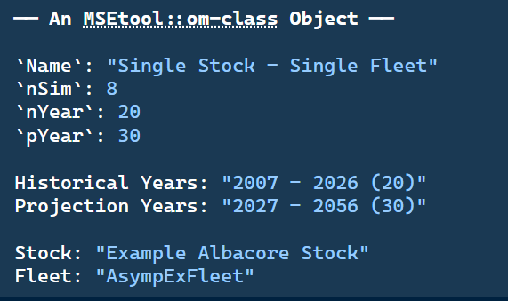
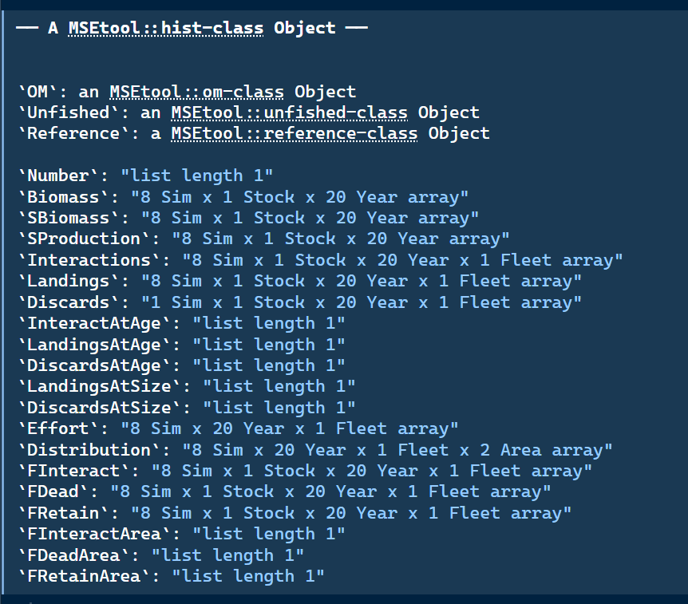
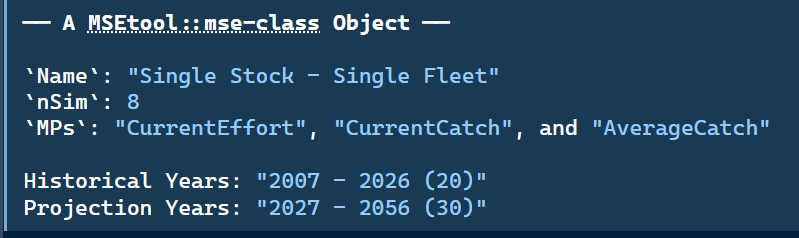
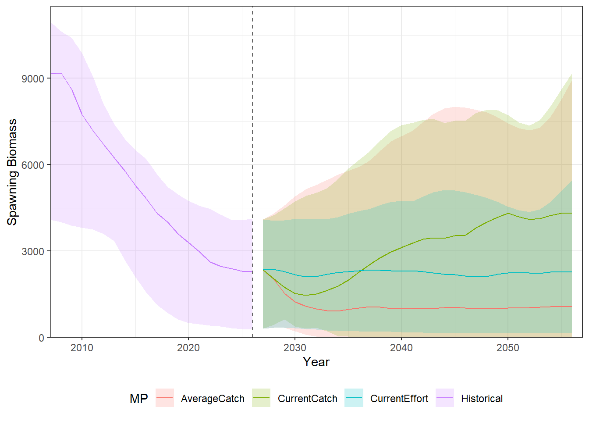

SingleStockOM5 An Example MSE
This chapter provides a walkthrough of the MSE process in openMSE, from specifying an operating model through to evaluating management procedure performance. The aim is for users to see the process end-to-end and become familiar with how the primary objects and functions interact.
5.1 Specify an Operating Model
The first step in any MSE is to construct the operating model. The OM is arguably the most important component of the analysis, it represents the best available understanding (or one hypothesis of several alternative understandings) of the stock and fishery dynamics, and all management procedure evaluations are conditioned on it.
This chapter uses SingleStockOM, one of openMSE’s built-in example operating models. It is a single-stock, single-fleet OM with 8 stochastic simulations, 20 historical years, and 30 projection years.
The small number of simulations keeps the model fast to run for demonstration purposes. In practice the number of simulations should be sufficiently high that the quantitative performance metrics are stable.
See Chapter 4 for an overview of all example objects and Developing Operating Models for details on the different methods for constructing operating models.
Typing the object name in the console prints a summary of its contents (Figure 5.1):

SingleStockOM object printed to the R console.
More information on SingleStockOM can be found by accessing the help documentation:
?SingleStockOMand more information on OM objects can be found in Chapter 2 as well as the help documentation:
?OM5.2 Simulate Historical Fishery
Once an OM has been constructed, the historical fishery can be simulated (or reconstructed) using the Simulate function:
myHist <- Simulate(SingleStockOM)As with the OM object above, typing the object name in the console prints a summary of its contents (Figure 5.2):

Hist object printed to the R console.
The Hist object contains the complete historical simulation output. Its key components are:
The OM: the
OMobject used to generate the simulation (OM).Reference quantities: unfished equilibrium and dynamic trajectories (
Unfished) and biological reference points (Reference). See Chapter 21 for more details.Population dynamics: numbers-at-age (
Number), total biomass (Biomass), spawning biomass (SBiomass), and spawning production (SProduction), all indexed by simulation, stock, and year. Because stocks can have different numbers of age classes, any output with an age or size dimension is stored as a nested list by stock (or by stock and fleet), rather than a single array.Fishery dynamics: landings and discards (total, at-age, and at-size), fishing effort and its spatial distribution, and fishing mortality decomposed into interacting, dead, and retained components, all indexed by simulation, stock, fleet, year, and area.
Observed data: the historical fishery data for each stock complex (
Dataobject; not shown in figure above). Either the real data provided inOM@Dataand/or simulated data generated by the observation model during the historical period. See Chapter 7 for more details.
See ?Hist for full documentation of the hist-class and its slots.
5.2.1 Exploring the Hist Object
The historical fishery dynamics contained in Hist can be explored using a set of extractor functions that return tidy data frames. The key functions are:
-
Number(): total abundance (numbers) across all ages and areas. -
Biomass(): total biomass. Optionally by age and/or area (viabyAgeandbyAreaarguments). -
SBiomass(): spawning biomass. Optionally by age and/or area. -
SProduction(): spawning production (egg production ifFecundityis specified, otherwise equal to spawning biomass; summed over ages and areas). -
Landings(): retained catch in biomass (or numbers ifbyAge = TRUE). Optionally by age, size, area, and/or fleet. -
Discards(): dead discarded catch. Same structure asLandings. -
Removals(): total removals (landings plus dead discards). Same structure asLandings. -
FInteract(): apical fishing mortality for all fish that encounter the gear, including those that are released alive. Optionally by age, size, area, and/or fleet. -
FDead(): apical fishing mortality for fish killed by the gear (retained plus dead discards). Same structure asFInteract. -
FRetain(): apical fishing mortality for retained fish only. Same structure asFInteract. -
Effort(): fishing effort by fleet.
Each accepts a Hist object and returns a data frame with columns Sim, Stock, Year, Period, and Value, with optional arguments to retain the Fleet, Age, Size, and Area dimensions.
See ?Biomass, ?Landings, ?Number, and ?FDead for full documentation.
Biomass(myHist) |> head()# A tibble: 6 × 6
Sim Stock Year Period Value Variable
<dbl> <ord> <dbl> <chr> <dbl> <chr>
1 1 Example Albacore Stock 2007 Historical 15221. Biomass
2 1 Example Albacore Stock 2008 Historical 15962. Biomass
3 1 Example Albacore Stock 2009 Historical 16460. Biomass
4 1 Example Albacore Stock 2010 Historical 16598. Biomass
5 1 Example Albacore Stock 2011 Historical 16408. Biomass
6 1 Example Albacore Stock 2012 Historical 16134. Biomass Biomass(myHist, byAge = TRUE, byArea = TRUE) |> head()# A tibble: 6 × 8
Sim Stock Year Period Age Area Value Variable
<dbl> <ord> <dbl> <chr> <dbl> <dbl> <dbl> <chr>
1 1 Example Albacore Stock 2007 Historical 0 1 71.9 Biomass
2 1 Example Albacore Stock 2007 Historical 1 1 111. Biomass
3 1 Example Albacore Stock 2007 Historical 2 1 175. Biomass
4 1 Example Albacore Stock 2007 Historical 3 1 186. Biomass
5 1 Example Albacore Stock 2007 Historical 4 1 173. Biomass
6 1 Example Albacore Stock 2007 Historical 5 1 171. Biomass SBiomass(myHist) |> head()# A tibble: 6 × 6
Sim Stock Year Period Value Variable
<dbl> <ord> <dbl> <chr> <dbl> <chr>
1 1 Example Albacore Stock 2007 Historical 6621. SBiomass
2 1 Example Albacore Stock 2008 Historical 6765. SBiomass
3 1 Example Albacore Stock 2009 Historical 6810. SBiomass
4 1 Example Albacore Stock 2010 Historical 6721. SBiomass
5 1 Example Albacore Stock 2011 Historical 6594. SBiomass
6 1 Example Albacore Stock 2012 Historical 6457. SBiomassLandings and discards are extracted similarly:
Landings(myHist) |> head()# A tibble: 6 × 7
Sim Stock Year Period Fleet Value Variable
<dbl> <ord> <dbl> <chr> <ord> <dbl> <chr>
1 1 Example Albacore Stock 2007 Historical AsympExFleet 0 Landings
2 1 Example Albacore Stock 2008 Historical AsympExFleet 286. Landings
3 1 Example Albacore Stock 2009 Historical AsympExFleet 609. Landings
4 1 Example Albacore Stock 2010 Historical AsympExFleet 875. Landings
5 1 Example Albacore Stock 2011 Historical AsympExFleet 1037. Landings
6 1 Example Albacore Stock 2012 Historical AsympExFleet 1204. LandingsDiscards(myHist) |> head()# A tibble: 6 × 7
Sim Stock Year Period Fleet Value Variable
<dbl> <ord> <dbl> <chr> <ord> <dbl> <chr>
1 1 Example Albacore Stock 2007 Historical AsympExFleet 0 Discards
2 1 Example Albacore Stock 2008 Historical AsympExFleet 0 Discards
3 1 Example Albacore Stock 2009 Historical AsympExFleet 0 Discards
4 1 Example Albacore Stock 2010 Historical AsympExFleet 0 Discards
5 1 Example Albacore Stock 2011 Historical AsympExFleet 0 Discards
6 1 Example Albacore Stock 2012 Historical AsympExFleet 0 Discards
TipArray Dimensions
By default, arrays stored in Hist are automatically compressed along the Sim dimension when the simulations all share identical values. For example, if all simulations produce zero discards, the discard array is stored with a single row rather than nSim identical rows.
Some operations, such as plotting one line per simulation, require the full nSim dimension. Use Extend() to expand an array back to full size:
L_Array <- Landings(myHist, df = FALSE)
D_Array <- Discards(myHist, df = FALSE)
dim(L_Array) Sim Stock Year Fleet
8 1 20 1 dim(D_Array) # all discards are 0 for every simulation Sim Stock Year Fleet
1 1 20 1 Discards(myHist) <- Extend(Discards(myHist, df = FALSE), nSim = nSim(myHist))
dim(Discards(myHist, df = FALSE)) Sim Stock Year Fleet
8 1 20 1 See ?Extend and ?ReduceDims for full documentation.
5.3 Specify Management Procedures
Once the historical fishery dynamics have been simulated, the operating model can be projected forward under different management policies, known as management procedures (MPs).
The design and selection of MPs is a central component of any MSE, and can range from simple empirical rules based on catch history to complex model-based procedures involving stock assessment.
This example MSE uses a set of simple example MPs included with openMSE (see Chapter 11), returned by the convenience function ExampleMPs():
-
CurrentEffort: maintains fishing effort at its terminal historical level for all fleets. -
CurrentCatch: sets the TAC for each fleet to the total removals observed in the last historical year. -
AverageCatch: sets the TAC to the mean total removals across all historical years.
A full description of MP development and specification is given in Chapter 10.
5.4 Run Forward Projections
Once the historical dynamics have been simulated and the MPs specified, the closed-loop projections are run using Project():
myMSE <- Project(Hist = myHist, MPs = ExampleMPs())Project() runs each MP in turn over the projection period. At each management interval, the operating model passes the current Data object to the MP, applies the returned Advice to the simulated population, and advances the model forward. This loop is repeated until the end of the projection period.
As with the OM and Hist objects, typing the object name in the console prints a summary of its contents (Figure 5.3):

MSE object printed to the R console.
The MSE object contains the complete projection output. It extends the Hist object with projection-period equivalents of all the population and fishery dynamics arrays, indexed by MP in addition to simulation, stock, fleet, year, and area.
The same extractor functions used to explore Hist (Biomass(), Landings(), FDead(), etc.) work on MSE objects, with the historical and projection periods labelled via a Period column, and an additional MP column.
See ?MSE for full documentation of the mse-class and its slots.
5.4.1 Exploring the MSE Object
The projection results can be explored using the same extractor functions as for Hist:
SBiomass(myMSE) |> head()# A tibble: 6 × 7
Sim Stock Year Period Value Variable MP
<dbl> <ord> <dbl> <chr> <dbl> <chr> <chr>
1 1 Example Albacore Stock 2007 Historical 6621. SBiomass Historical
2 1 Example Albacore Stock 2008 Historical 6765. SBiomass Historical
3 1 Example Albacore Stock 2009 Historical 6810. SBiomass Historical
4 1 Example Albacore Stock 2010 Historical 6721. SBiomass Historical
5 1 Example Albacore Stock 2011 Historical 6594. SBiomass Historical
6 1 Example Albacore Stock 2012 Historical 6457. SBiomass HistoricalLandings(myMSE) |> tail()# A tibble: 6 × 8
Sim Stock Year Period Fleet Value Variable MP
<dbl> <ord> <dbl> <chr> <ord> <dbl> <chr> <chr>
1 8 Example Albacore Stock 2055 Projection AsympExFle… 616. Landings Curr…
2 8 Example Albacore Stock 2055 Projection AsympExFle… 632. Landings Curr…
3 8 Example Albacore Stock 2055 Projection AsympExFle… 591. Landings Aver…
4 8 Example Albacore Stock 2056 Projection AsympExFle… 592. Landings Curr…
5 8 Example Albacore Stock 2056 Projection AsympExFle… 632. Landings Curr…
6 8 Example Albacore Stock 2056 Projection AsympExFle… 591. Landings Aver…5.4.2 Evaluating Performance
MSE results are typically evaluated using quantitative performance metrics (PMs), numerical summaries of management procedure performance against objectives specified by fishery managers. Common examples include the probability of maintaining spawning biomass above a limit reference point, the average catch over the projection period, and the inter-annual variability in catch.
openMSE includes extractor functions for common derived quantities used in performance metric calculations. For example, SB_SB0() returns spawning biomass relative to unfished spawning biomass (\(SB/SB_0\)) for each simulation, MP, stock, and year (these extractor functions also work for Hist objects):
A simple summary table across MPs:
# A tibble: 3 × 4
MP Median Lower Upper
<chr> <dbl> <dbl> <dbl>
1 AverageCatch 0.286 0.00000000586 0.755
2 CurrentCatch 0.402 0.00000614 0.815
3 CurrentEffort 0.284 0.0252 0.507Projection results can also be visualised directly. Figure 5.4 shows \(SB/SB_0\) trajectories across simulations and MPs:

SingleStockOM. The shaded region spans the 10th–90th percentile; the solid line shows the median. The dashed vertical line marks the end of the historical period.
openMSE does not currently include built-in example PMs, but these are planned for a future release.
For interactive visualization and exploration of MSE results, we recommend Slick, a web-based application developed for summarizing and communicating MSE output to scientists, managers, and other stakeholders. Slick aprovides an interactive interface for plotting performance metrics, comparing MPs across objectives, and producing presentation-ready figures. It is particularly useful for stakeholder engagement and for the performance trade-off analysis that is central to the MP selection process.